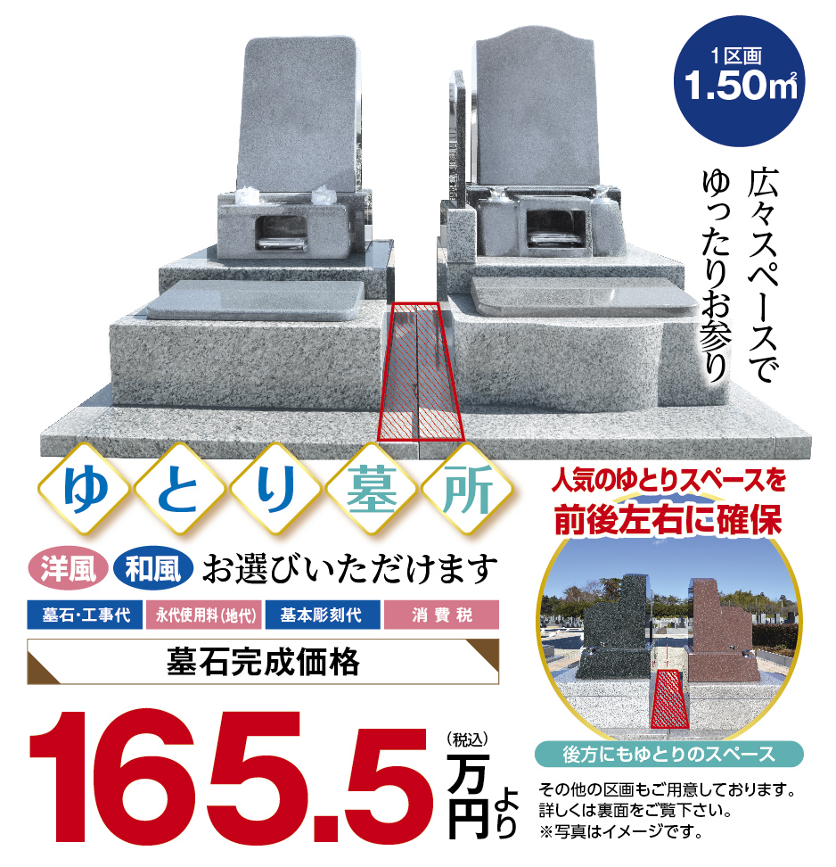
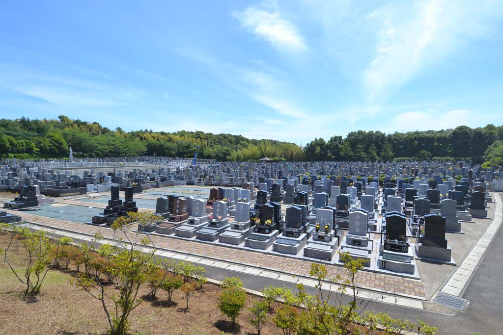
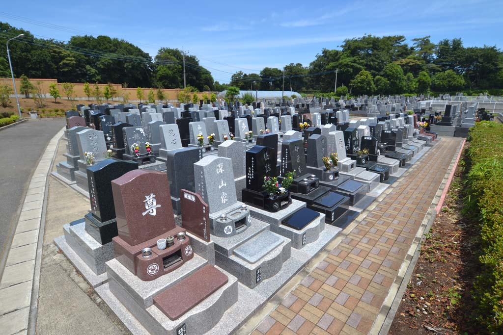
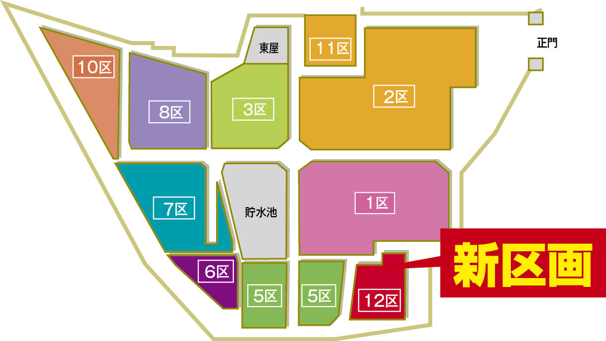
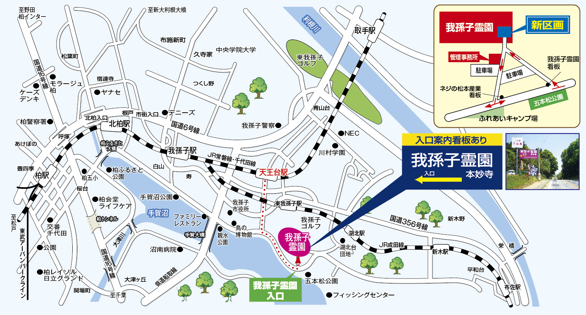

ゆとり墓所区画 1.5㎡



165.5万円（税込）
墓石工事代・永代使用料・基本彫刻代・消費税すべて込み
区画案内

自然豊かな高台に広がる霊園は、四季の風が心地よく抜ける開放的な空間。陽当たりの良い区画が続き、ゆったりとした参道と丁寧に手入れされた植栽が、訪れるたびに清々しさを感じさせます。
管理事務所の対応も行き届き、供花やお線香の購入もできるため、手ぶらで気軽にお参りが可能。静けさと便利さが両立した立地で、家族が無理なく通い続けられる“環境の良い霊園”として選ばれています。
【コラム】お墓の引っ越し「改葬」について
改葬（かいそう）は、遠方や管理の負担などの理由で、今あるお墓を別の霊園へ移す手続きです。行政の許可が必要ですが、環境の良い場所へ移せるため、将来の供養がぐっとしやすくなるのが魅力。家族の負担軽減やアクセス改善につながり、安心してお墓を守り続けられる選択として注目されています。
改葬の手続きや手順などの詳細は現地係員がご説明しますので、お気軽にお問い合わせください。
アクセス

住所：千葉県我孫子市岡発戸字榎戸1380
ご来園の際は霊園入口右側のご見学受付所にお寄りいただき、このページのトップ画面をご提示ください。現地係員が霊園内をご案内させていただきます。
現地案内会のご案内・お問い合わせ
現地係員直通電話：080-1178-1515
電話をかける